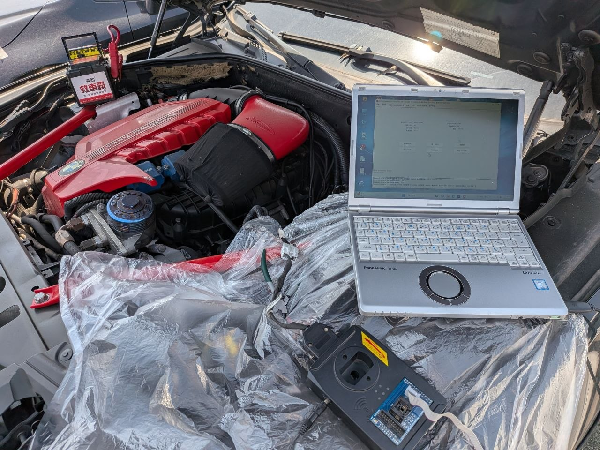

現場實拍：苗栗苑裡 BMW 740 鑰匙全丟，工程師現場讀取數據中
旗艦級防盜挑戰：BMW F01 7 系列數據解碼
BMW 7 系列（F01/F02）搭載了極為嚴密的 CAS4/CAS4+ 防盜系統。當鑰匙全數遺失時，傳統做法往往需要將車輛拖回原廠，等待數週並支付高昂的模組更換與配製費用。
極致核心：遠征苗栗苑裡，現場即刻救援
本次任務位於苗栗苑裡，車主在鑰匙全丟後陷入無法用車的困境。極致核心團隊抵達現場後，立即使用專業級編程設備與穩定電源，直接在車端進行數據採集。
透過精準的數據重構技術，我們在不拆卸任何模組、不破壞原車線路的前提下，成功計算出防盜資訊，並現場匹配出全新的感應智慧鑰匙。整個過程僅耗時約一小時，讓這台旗艦座駕重獲動力。
CAS4 系統專家
專攻歐系高階防盜，現場數據重構，免去原廠漫長等待。
苗栗快速響應
苑裡、通霄、三義地區 24H 快速預約，現場救援完成。